Teoría Básica de CA
- ¿Qué es la corriente alterna (CA)?
- Formas de onda de CA
- Mediciones de magnitud de CA
- Cálculos simples de circuitos de CA
- Fase de CA
- Principios de radiofrecuencia
- Colaboradores
¿Qué es la corriente alterna (CA)?
La mayoría de los estudiantes de electricidad comienzan su estudio con lo que se conoce comocorriente continua(CC), que es electricidad que fluye en una dirección constante y/o que posee un voltaje con polaridad constante. La CC es el tipo de electricidad producida por una batería (con terminales positivos y negativos definidos), o el tipo de carga generada al frotar ciertos tipos de materiales entre sí.
Por muy útil y fácil de entender que sea DC, no es el único “tipo” de electricidad en uso. Ciertas fuentes de electricidad (en particular, las rotativas) generadores electromecánicos) producen naturalmente voltajes que se alternan en polaridad, invirtiendo positivo y negativo con el tiempo. Ya sea como voltaje polaridad de conmutación o como dirección de conmutación de corriente hacia adelante y hacia atrás, esto El “tipo” de electricidad se conoce como corriente alterna (CA): Figuraa continuación
{kind=link}
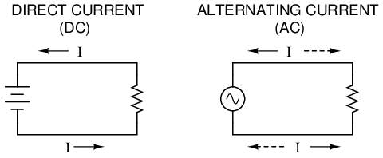
Corriente directa versus corriente alterna
Mientras que el conocido símbolo de la batería se utiliza como símbolo genérico para cualquier fuente de voltaje de CC, el círculo con la línea ondulada en su interior es el símbolo genérico de cualquier fuente de voltaje de CA.
Uno podría preguntarse por qué alguien se molestaría con algo como el aire acondicionado. Es cierto que en algunos casos la CA no tiene ninguna ventaja práctica sobre la CC. En aplicaciones donde se utiliza electricidad para disipar energía en forma de calor, la polaridad o dirección de la corriente es irrelevante, siempre que haya suficiente voltaje y corriente en la carga para producir el calor deseado (disipación de potencia). Sin embargo, con la CA es posible construir generadores eléctricos, motores y sistemas de distribución de energía que son mucho más eficientes que la CC, por lo que encontramos que la CA se utiliza predominantemente en todo el mundo en aplicaciones de alta potencia. Para explicar los detalles de por qué esto es así, es necesario un poco de conocimiento previo sobre AC.
Si se construye una máquina para hacer girar un campo magnético alrededor de un conjunto de bobinas de alambre estacionarias con el giro de un eje, se producirá voltaje de CA a través de las bobinas de alambre a medida que ese eje gira, de acuerdo con la Ley de inducción electromagnética de Faraday. Este es el principio de funcionamiento básico de un generador de CA, también conocido comoalternador: Cifraa continuación
{kind=link}
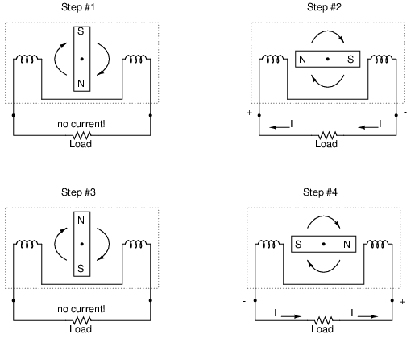
Operación del alternador
Observe cómo la polaridad del voltaje a través de las bobinas de alambre se invierte cuando pasan los polos opuestos del imán giratorio. Conectada a una carga, esta polaridad de voltaje invertida creará una dirección de corriente inversa en el circuito. Cuanto más rápido se gira el eje del alternador, más rápido girará el imán, lo que da como resultado un voltaje y una corriente alterna que cambian de dirección con más frecuencia en un período de tiempo determinado.
Mientras que los generadores de CC funcionan según el mismo principio general de electromagnética Por inducción, su construcción no es tan simple como la de sus homólogos de CA. con En un generador de CC, la bobina de cable está montada en el eje donde está el imán. el alternador de CA y las conexiones eléctricas se realizan a esta bobina giratoria a través de “escobillas” de carbón estacionarias que entran en contacto con tiras de cobre en el eje giratorio. eje. Todo esto es necesario para cambiar la polaridad de salida cambiante de la bobina a el circuito externo de modo que el circuito externo vea una polaridad constante: Figuraa continuación
{kind=link}
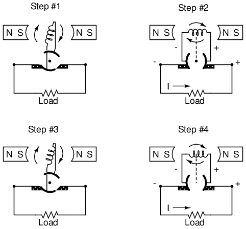
Operación del generador de CC
El generador que se muestra arriba producirá dos pulsos de voltaje por revolución del eje, ambos pulsos en la misma dirección (polaridad). Para que un generador de CC produzcaconstantevoltaje, en lugar de breves pulsos de voltaje una vez cada 1/2 revolución, hay múltiples conjuntos de bobinas que hacen contacto intermitente con las escobillas. El diagrama que se muestra arriba es un poco más simplificado que el que verías en la vida real.
Los problemas relacionados con establecer y romper el contacto eléctrico con una bobina en movimiento deberían ser obvios (chispas y calor), especialmente si el eje del generador gira a alta velocidad. Si la atmósfera que rodea la máquina contiene vapores inflamables o explosivos, los problemas prácticos de los contactos de las escobillas que producen chispas son aún mayores. Un generador de CA (alternador) no requiere escobillas ni conmutadores para funcionar, por lo que es inmune a estos problemas que experimentan los generadores de CC.
Los beneficios de la CA sobre la CC con respecto al diseño del generador también se reflejan en los motores eléctricos. Mientras que los motores de CC requieren el uso de escobillas para hacer contacto eléctrico con bobinas de alambre en movimiento, los motores de CA no. De hecho, los diseños de motores de CA y CC son muy similares a sus contrapartes de generador (idénticos por el bien de este tutorial), el motor de CA depende del campo magnético inverso producido por la corriente alterna a través de sus bobinas de alambre estacionarias para hacer girar el imán giratorio sobre su eje, y el motor de CC depende de los contactos de las escobillas que hacen y cortan conexiones para invertir la corriente a través de la bobina giratoria cada 1/2 rotación (180 grados).
Entonces sabemos que los generadores de CA y los motores de CA tienden a ser más simples que los de CC. Generadores y motores DC. Esta relativa simplicidad se traduce en una mayor confiabilidad y menor costo de fabricación. Pero, ¿para qué más sirve el aire acondicionado? ¡Seguramente debe haber algo más que detalles de diseño de generadores y motores! De hecho lo hay. Existe un efecto del electromagnetismo conocido comoinducción mutua, mediante el cual dos o más bobinas de alambre colocadas de manera que el campo magnético cambiante creado por uno induce un voltaje en el otro. Si tenemos dos bobinas mutuamente inductivas y energizamos una bobina con AC, crearemos un voltaje AC en la otra bobina. Cuando se usa como tal, este dispositivo se conoce comotransformador: Cifraa continuación
{kind=link}
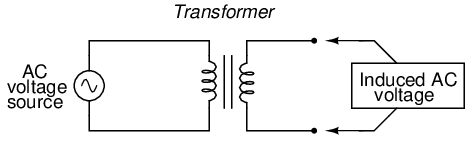
El transformador “transforma” el voltaje y la corriente CA.
La importancia fundamental de un transformador es su capacidad para aumentar el voltaje. o hacia abajo desde la bobina alimentada hasta la bobina no alimentada. El voltaje CA inducido en La bobina sin alimentación (“secundaria”) es igual al voltaje de CA a través de la bobina alimentada. Bobina (“primaria”) multiplicada por la relación de vueltas de la bobina secundaria a la primaria. vueltas de la bobina. Si la bobina secundaria está alimentando una carga, la corriente a través de la La bobina secundaria es todo lo contrario: la corriente de la bobina primaria multiplicada por la Relación de vueltas primarias y secundarias. Esta relación tiene una relación muy estrecha. analogía mecánica, utilizando par y velocidad para representar voltaje y corriente, respectivamente: Figuraa continuación
{kind=link}
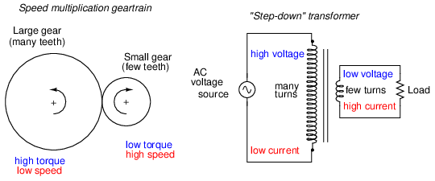
El tren de engranajes de multiplicación de velocidad reduce el par y aumenta la velocidad. El transformador reductor reduce el voltaje y aumenta la corriente.
Si la relación de devanado se invierte de modo que la bobina primaria tenga menos vueltas que la bobina secundaria, el transformador "aumenta" el voltaje de la fuente nivel a un nivel superior en la carga: Figuraa continuación
{kind=link}
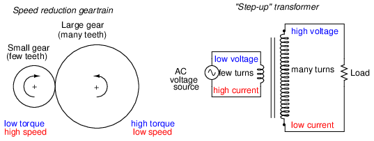
El tren de engranajes de reducción de velocidad aumenta y reduce la velocidad. El transformador elevador aumenta el voltaje y reduce la corriente.
La capacidad del transformador para aumentar o disminuir el voltaje de CA con facilidad le da a la CA una ventaja incomparable con la CC en el ámbito de la distribución de energía en la figura.a continuación. Cuando se transmite energía eléctrica a largas distancias, es mucho más eficiente hacerlo con voltajes elevados y corrientes reducidas (cable de menor diámetro con menos pérdidas de potencia resistiva), luego reducir el voltaje y aumentar la corriente para uso industrial, empresarial o de consumo.
{kind=link}
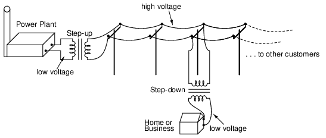
Los transformadores permiten una transmisión eficiente de energía eléctrica de alto voltaje a larga distancia.
La tecnología de transformadores ha hecho práctica la distribución de energía eléctrica a largo alcance. Sin la capacidad de aumentar y disminuir el voltaje de manera eficiente, tendría un costo prohibitivo construir sistemas de energía para cualquier uso que no sea de corto alcance (dentro de unas pocas millas como máximo).
Por muy útiles que sean los transformadores, solo funcionan con CA, no con CC. Debido a que el fenómeno de la inductancia mutua se basa encambioLos campos magnéticos y la corriente continua (CC) solo pueden producir campos magnéticos estables, los transformadores simplemente no funcionan con corriente continua. Por supuesto, la corriente continua puede interrumpirse (impulsarse) a través del devanado primario de un transformador para crear un campo magnético cambiante (como se hace en los sistemas de encendido de automóviles para producir energía de bujías de alto voltaje a partir de una batería de CC de bajo voltaje), pero la CC pulsada no es tan diferente de la CA. Quizás más que cualquier otra razón, esta es la razón por la que la CA encuentra una aplicación tan amplia en los sistemas de energía.
- REVISAR:
- DC significa "corriente continua", es decir, voltaje o corriente que mantiene una polaridad o dirección constante, respectivamente, a lo largo del tiempo.
- CA significa "corriente alterna", es decir, voltaje o corriente que cambia de polaridad o dirección, respectivamente, con el tiempo.
- Generadores electromecánicos de CA, conocidos comoalternadores, son de construcción más simple que los generadores electromecánicos de CC.
- El diseño de motores de CA y CC sigue muy de cerca los principios de diseño de los respectivos generadores.
- A transformadores un par de bobinas mutuamente inductivas que se utilizan para transmitir energía CA de una bobina a la otra. A menudo, el número de vueltas en cada bobina se establece para crear un aumento o disminución de voltaje desde la bobina alimentada (primaria) a la bobina no alimentada (secundaria).
- Tensión secundaria = Tensión primaria (vueltas secundarias / vueltas primarias)
- Corriente secundaria = Corriente primaria (vueltas primarias / vueltas secundarias)
Formas de onda de CA
Cuando un alternador produce voltaje CA, el voltaje cambia de polaridad con el tiempo, pero lo hace de una manera muy particular. Cuando se representa gráficamente a lo largo del tiempo, la "onda" trazada por este voltaje de polaridad alterna de un alternador adquiere una forma distinta, conocida comoonda sinusoidal: Cifraa continuación
{kind=link}
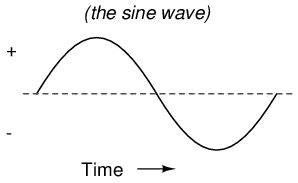
Gráfico de voltaje CA a lo largo del tiempo (la onda sinusoidal).
En el gráfico de voltaje de un alternador electromecánico, el cambio de una polaridad a la otra es suave, el nivel de voltaje cambia más rápidamente en el punto cero (“cruce”) y más lentamente en su pico. Si tuviéramos que graficar la función trigonométrica del “seno” en un rango horizontal de 0 a 360 grados, encontraríamos exactamente el mismo patrón que en la Tablaa continuación.
Trigonometric “sine” function.
| Ángulo (o) | sin(angle) | ola | Ángulo (o) | sin(angle) | ola |
|---|---|---|---|---|---|
| 0 | 0.0000 | cero | 180 | 0.0000 | cero |
| 15 | 0.2588 | + | 195 | -0.2588 | - |
| 30 | 0.5000 | + | 210 | -0.5000 | - |
| 45 | 0.7071 | + | 225 | -0.7071 | - |
| 60 | 0.8660 | + | 240 | -0.8660 | - |
| 75 | 0.9659 | + | 255 | -0.9659 | - |
| 90 | 1.0000 | +pico | 270 | -1.0000 | -cima |
| 105 | 0.9659 | + | 285 | -0.9659 | - |
| 120 | 0.8660 | + | 300 | -0.8660 | - |
| 135 | 0.7071 | + | 315 | -0.7071 | - |
| 150 | 0.5000 | + | 330 | -0.5000 | - |
| 165 | 0.2588 | + | 345 | -0.2588 | - |
| 180 | 0.0000 | cero | 360 | 0.0000 | cero |
La razón por la que un alternador electromecánico genera CA de onda sinusoidal se debe a la física de su funcionamiento. El voltaje producido por las bobinas estacionarias por el movimiento del imán giratorio es proporcional a la velocidad a la que el flujo magnético cambia perpendicularmente a las bobinas (Ley de inducción electromagnética de Faraday). Esa tasa es mayor cuando los polos del imán están más cerca de las bobinas y menor cuando los polos del imán están más alejados de las bobinas. Matemáticamente, la tasa de cambio del flujo magnético debido a un imán giratorio sigue la de una función sinusoidal, por lo que el voltaje producido por las bobinas sigue esa misma función.
Si tuviéramos que seguir el voltaje cambiante producido por una bobina en un alternador desde cualquier punto en el gráfico de onda sinusoidal hasta el punto donde la forma de onda comienza a repetirse, habríamos marcado exactamente unciclode esa ola. Esto se muestra más fácilmente abarcando la distancia entre picos idénticos, pero se puede medir entre cualquier punto correspondiente en el gráfico. Las marcas de grados en el eje horizontal del gráfico representan el dominio de la función seno trigonométrica y también la posición angular de nuestro eje de alternador bipolar simple a medida que gira: Figuraa continuación
{kind=link}
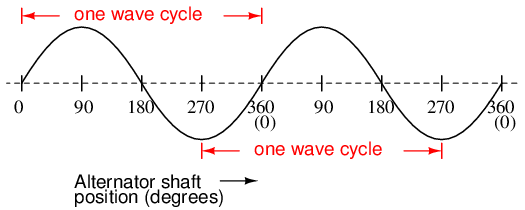
Tensión del alternador en función de la posición del eje (tiempo).
Dado que el eje horizontal de este gráfico puede marcar el paso del tiempo así como la posición del eje en grados, la dimensión marcada para un ciclo a menudo se mide en una unidad de tiempo, generalmente segundos o fracciones de segundo. Cuando se expresa como una medida, a menudo se le llamaperíodode una ola. El periodo de una onda en grados essiempre 360, pero la cantidad de tiempo que ocupa un período depende de la velocidad a la que el voltaje oscila hacia adelante y hacia atrás.
Una medida más popular para describir la tasa alterna de un voltaje de CA o una onda de corriente queperíodoes la tasa de esa oscilación de ida y vuelta. esto se llamafrecuencia. La unidad moderna de frecuencia es el Hertz (abreviado Hz), que representa el número de ciclos de onda completados durante un segundo de tiempo. En los Estados Unidos de América, la frecuencia estándar de la línea eléctrica es de 60 Hz, lo que significa que el voltaje de CA oscila a una velocidad de 60 ciclos completos de ida y vuelta cada segundo. En Europa, donde la frecuencia del sistema eléctrico es de 50 Hz, el voltaje de CA solo completa 50 ciclos por segundo. El transmisor de una estación de radio que transmite a una frecuencia de 100 MHz genera un voltaje de CA que oscila a una velocidad de 100millónciclos cada segundo.
Antes de la canonización de la unidad Hertz, la frecuencia se expresaba simplemente como "ciclos por segundo". Los medidores y equipos electrónicos más antiguos a menudo llevaban unidades de frecuencia de “CPS” (ciclos por segundo) en lugar de Hz. Mucha gente cree que el cambio de unidades autoexplicativas como CPS a Hertz constituye un paso atrás en la claridad. Se produjo un cambio similar cuando la unidad “Celsius” reemplazó a la “Centígrados” para la medición métrica de temperatura. El nombre Centígrado se basó en una escala de 100 unidades (“Centi-”) (“-grado”) que representa los puntos de fusión y ebullición del H.2Oh, respectivamente. El nombre Celsius, por otra parte, no da ninguna pista sobre el origen o significado de la unidad.
El período y la frecuencia son recíprocos matemáticos entre sí. Es decir, si una onda tiene un periodo de 10 segundos, su frecuencia será de 0,1 Hz, o 1/10 de ciclo por segundo:
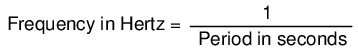
Un instrumento llamadoosciloscopio, Cifraa continuación, se utiliza para mostrar un voltaje cambiante a lo largo del tiempo en una pantalla gráfica. Quizás esté familiarizado con la apariencia de unECG or EKGMáquina (electrocardiógrafo), utilizada por los médicos para representar gráficamente las oscilaciones del corazón de un paciente a lo largo del tiempo. El ECG es un osciloscopio especial diseñado expresamente para uso médico. Los osciloscopios de uso general tienen la capacidad de mostrar el voltaje de prácticamente cualquier fuente de voltaje, trazado como un gráfico con el tiempo como variable independiente. Es muy útil conocer la relación entre el período y la frecuencia al mostrar una forma de onda de corriente o voltaje de CA en la pantalla de un osciloscopio. Al medir el período de la onda en el eje horizontal de la pantalla del osciloscopio y alternar ese valor de tiempo (en segundos), puede determinar la frecuencia en Hercios.
{kind=link}
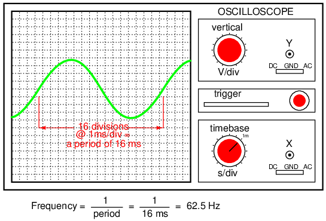
El período de tiempo de la onda sinusoidal se muestra en el osciloscopio.
El voltaje y la corriente no son de ninguna manera las únicas variables físicas sujetas a variaciones con el tiempo. Mucho más común en nuestra experiencia cotidiana essonido, que no es más que la alternancia de compresión y descompresión (ondas de presión) de moléculas de aire, interpretada por nuestros oídos como una sensación física. Dado que la corriente alterna es un fenómeno ondulatorio, comparte muchas de las propiedades de otros fenómenos ondulatorios, como el sonido. Por esta razón, el sonido (especialmente la música estructurada) proporciona una excelente analogía para relacionar conceptos de CA.
En términos musicales, la frecuencia equivale apaso. Las notas graves, como las producidas por una tuba o un fagot, consisten en vibraciones de moléculas de aire que son relativamente lentas (baja frecuencia). Las notas agudas, como las producidas por una flauta o un silbato, consisten en el mismo tipo de vibraciones en el aire, solo que vibran a un ritmo mucho más rápido (frecuencia más alta). Cifraa continuaciónes una tabla que muestra las frecuencias reales de una variedad de notas musicales comunes.
{kind=link}
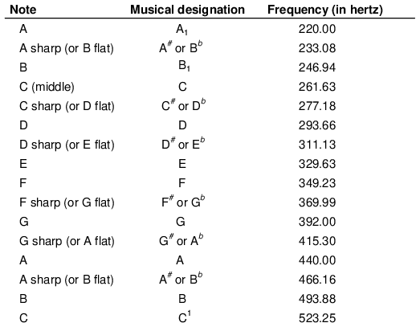
La frecuencia en Hertz (Hz) se muestra para varias notas musicales.
Los observadores astutos notarán que todas las notas en la tabla que llevan la misma designación de letra están relacionadas por una relación de frecuencia de 2:1. Por ejemplo, la primera frecuencia mostrada (designada con la letra “A”) es 220 Hz. La siguiente nota "A" más alta tiene una frecuencia de 440 Hz, exactamente el doble de ciclos de ondas sonoras por segundo. La misma relación 2:1 es válida para el primer La sostenido (233,08 Hz) y el siguiente La sostenido (466,16 Hz), y para todos los pares de notas que se encuentran en la tabla.
Audiblemente, dos notas cuyas frecuencias son exactamente el doble de la otra suenan notablemente similares. Esta similitud en el sonido se reconoce musicalmente; el lapso más corto en una escala musical que separa tales pares de notas se llamaoctava. Siguiendo esta regla, la siguiente nota “A” más alta (una octava por encima de 440 Hz) será 880 Hz, la siguiente nota “A” más baja (una octava por debajo de 220 Hz) será 110 Hz. Una vista del teclado de un piano ayuda a poner esta escala en perspectiva: Figuraa continuación
{kind=link}
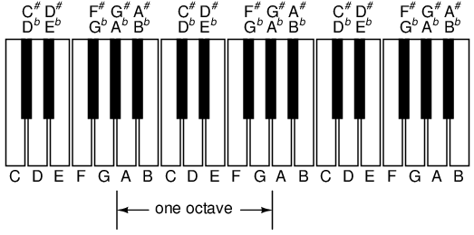
Se muestra una octava en un teclado musical.
Como puedes ver, una octava es igual aSieteLa distancia equivalente a las teclas blancas en un teclado de piano. El familiar mnemónico musical (doe-ray-mee-fah-so-lah-tee), sí, el mismo patrón inmortalizado en la caprichosa canción de Rodgers y Hammerstein cantada enEl sonido de la música-- cubre una octava de C a C.
Mientras que los alternadores electromecánicos y muchos otros fenómenos físicos naturalmente producen ondas sinusoidales, este no es el único tipo de onda alterna en existencia. Otras "formas de onda" de CA se producen comúnmente en dispositivos electrónicos. circuitos. A continuación se muestran algunos ejemplos de formas de onda y sus designaciones comunes. en figuraa continuación
{kind=link}
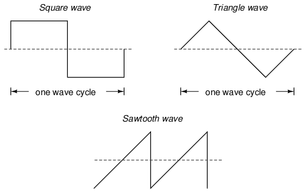
Algunas formas de onda comunes (formas de onda).
Estas formas de onda no son de ninguna manera los únicos tipos de formas de onda que existen. Son simplemente algunos que son lo suficientemente comunes como para que se les hayan dado nombres distintos. Incluso en circuitos que se supone que manifiestan formas de onda de voltaje/corriente “puras” sinusoidales, cuadradas, triangulares o en dientes de sierra, el resultado en la vida real es a menudo una versión distorsionada de la forma de onda deseada. Algunas formas de onda son tan complejas que desafían la clasificación como un “tipo” particular (incluidas las formas de onda asociadas con muchos tipos de instrumentos musicales). En términos generales, cualquier forma de onda que se parezca mucho a una onda sinusoidal perfecta se denominasinusoidal, cualquier cosa diferente se etiqueta comono sinusoidal. Dado que la forma de onda de un voltaje o corriente CA es crucial para su impacto en un circuito, debemos ser conscientes del hecho de que las ondas CA tienen una variedad de formas.
- REVISAR:
- La CA producida por un alternador electromecánico sigue la forma gráfica de una onda sinusoidal.
- One ciclode una onda es una evolución completa de su forma hasta el punto en que está lista para repetirse.
- The períodode una onda es la cantidad de tiempo que tarda en completar un ciclo.
- Frecuenciaes el número de ciclos completos que completa una onda en un período de tiempo determinado. Generalmente se mide en Hercios (Hz), siendo 1 Hz igual a un ciclo de onda completo por segundo.
- Frequency = 1/(period in seconds)
Mediciones de magnitud de CA
Hasta ahora sabemos que el voltaje CA alterna en polaridad y la corriente CA alterna en dirección. También sabemos que la CA puede alternar de diferentes maneras y, al rastrear la alternancia a lo largo del tiempo, podemos trazarla como una "forma de onda". Podemos medir la tasa de alternancia midiendo el tiempo que tarda una onda en evolucionar antes de repetirse (el "período") y expresarlo como ciclos por unidad de tiempo o "frecuencia". En música, la frecuencia es la misma quepaso, que es la propiedad esencial que distingue una nota de otra.
Sin embargo, nos encontramos con un problema de medición si intentamos expresar qué tan grande o pequeña es una cantidad de CA. Con CC, donde las cantidades de voltaje y corriente son generalmente estables, tenemos pocos problemas para expresar cuánto voltaje o corriente tenemos en cualquier parte de un circuito. Pero, ¿cómo se puede conceder una única medida de magnitud a algo que cambia constantemente?
Una forma de expresar la intensidad o magnitud (también llamadaamplitud), de una cantidad de CA es medir su altura máxima en un gráfico de forma de onda. Esto se conoce como elcima or crestavalor de una forma de onda de CA: Figuraa continuación
{kind=link}
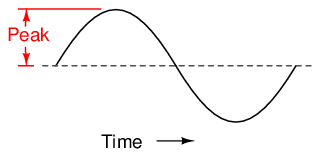
Tensión máxima de una forma de onda.
Otra forma es medir la altura total entre picos opuestos. Esto se conoce como elpico a picoValor (P-P) de una forma de onda de CA: Figuraa continuación
{kind=link}
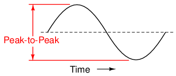
Tensión pico a pico de una forma de onda.
Desafortunadamente, cualquiera de estas expresiones de amplitud de forma de onda puede resultar engañosa al comparar dos tipos diferentes de ondas. Por ejemplo, una onda cuadrada con un pico de 10 voltios es obviamente una mayor cantidad de voltaje durante una mayor cantidad de tiempo que una onda triangular con un pico de 10 voltios. Los efectos de estos dos voltajes de CA que alimentan una carga serían bastante diferentes: Figuraa continuación
{kind=link}
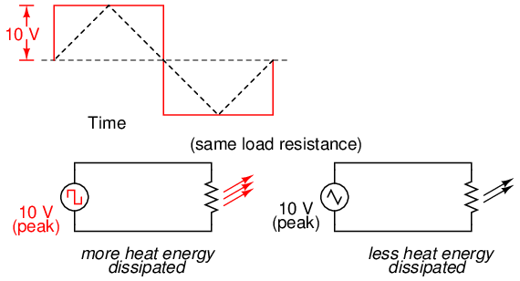
Una onda cuadrada produce un mayor efecto de calentamiento que la misma onda triangular de voltaje máximo.
Una forma de expresar la amplitud de diferentes formas de onda de una manera más equivalente es promediar matemáticamente los valores de todos los puntos en el gráfico de una forma de onda para obtener un único número agregado. Esta medida de amplitud se conoce simplemente comopromediovalor de la forma de onda. Si promediamos algebraicamente todos los puntos de la forma de onda (es decir, para considerar susfirmar, ya sea positivo o negativo), el valor promedio para la mayoría de las formas de onda es técnicamente cero, porque todos los puntos positivos cancelan todos los puntos negativos durante un ciclo completo: Figuraa continuación
{kind=link}
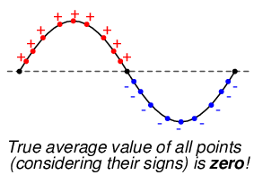
El valor medio de una onda sinusoidal es cero.
Esto, por supuesto, será cierto para cualquier forma de onda que tenga porciones de áreas iguales por encima y por debajo de la línea "cero" de un gráfico. Sin embargo, como unprácticoMedida del valor agregado de una forma de onda, el "promedio" generalmente se define como la media matemática de todos los puntos.valores absolutosdurante un ciclo. En otras palabras, calculamos el valor promedio práctico de la forma de onda considerando todos los puntos de la onda como cantidades positivas, como si la forma de onda se viera así: Figuraa continuación
{kind=link}
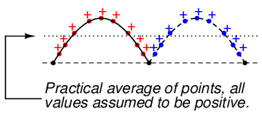
Forma de onda vista por un medidor de “respuesta promedio” de CA.
Los movimientos del medidor mecánico insensible a la polaridad (medidores diseñados para responder igualmente a los semiciclos positivos y negativos de un voltaje o corriente alterna) se registran en proporción al valor promedio (práctico) de la forma de onda, porque la inercia del puntero contra la tensión del resorte promedia naturalmente la fuerza producida por los valores variables de voltaje/corriente a lo largo del tiempo. Por el contrario, los movimientos del medidor sensibles a la polaridad vibran inútilmente si se exponen a voltaje o corriente alterna, y sus agujas oscilan rápidamente alrededor de la marca cero, lo que indica el valor promedio verdadero (algebraico) de cero para una forma de onda simétrica. Cuando en este texto se hace referencia al valor “promedio” de una forma de onda, se asumirá que se utiliza la definición “práctica” de promedio a menos que se especifique lo contrario.
Otro método para derivar un valor agregado para la amplitud de la forma de onda se basa en la capacidad de la forma de onda para realizar un trabajo útil cuando se aplica a una resistencia de carga. Desafortunadamente, una medición de CA basada en el trabajo realizado por una forma de onda no es lo mismo que el valor "promedio" de esa forma de onda, porque elfuerzadisipado por una carga dada (trabajo realizado por unidad de tiempo) no es directamente proporcional a la magnitud del voltaje o la corriente aplicada sobre él. Más bien, el poder es proporcional a lacuadradodel voltaje o corriente aplicada a una resistencia (P = E2/R, y P = I2R). Aunque las matemáticas de tal medición de amplitud pueden no ser sencillas, su utilidad sí lo es.
Considere una sierra de cinta y una sierra de calar, dos equipos modernos para trabajar la madera. Ambos tipos de sierras cortan con una hoja de metal delgada, dentada y motorizada para cortar madera. Pero mientras la sierra de cinta utiliza un movimiento continuo de la hoja para cortar, la sierra de calar utiliza un movimiento de ida y vuelta. La comparación de corriente alterna (CA) con corriente continua (CC) se puede comparar con la comparación de estos dos tipos de sierra: Figuraa continuación
{kind=link}
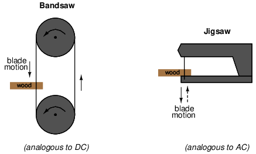
Analogía de sierra de cinta y sierra de calar entre CC y CA.
El problema de tratar de describir las cantidades cambiantes de voltaje o corriente alterna en una sola medición agregada también está presente en esta analogía de la sierra: ¿cómo podríamos expresar la velocidad de la hoja de una sierra de calar? Una hoja de sierra de cinta se mueve con una velocidad constante, similar a la forma en que el voltaje CC empuja o la corriente CC se mueve con una magnitud constante. La hoja de una sierra de calar, por otro lado, se mueve hacia adelante y hacia atrás y su velocidad cambia constantemente. Es más, el movimiento de vaivén de dos sierras de calar cualesquiera puede no ser del mismo tipo, dependiendo del diseño mecánico de las sierras. Una sierra de calar podría mover su hoja con un movimiento de onda sinusoidal, mientras que otra con un movimiento de onda triangular. Para calificar una sierra de calar según sucimaLa velocidad de la hoja sería bastante engañosa al comparar una sierra de calar con otra (¡o una sierra de calar con una sierra de cinta!). A pesar de que estas diferentes sierras mueven sus hojas de diferentes maneras, son iguales en un aspecto: todas cortan madera, y una comparación cuantitativa de esta función común puede servir como base común para calificar la velocidad de la hoja.
Imagínese una sierra de calar y una sierra de cinta, una al lado de la otra, equipadas con hojas idénticas (mismo paso de dientes, ángulo, etc.), igualmente capaces de cortar el mismo espesor del mismo tipo de madera al mismo ritmo. Podríamos decir que las dos sierras eran equivalentes o iguales en su capacidad de corte. ¿Podría usarse esta comparación para asignar una velocidad de hoja “equivalente a una sierra de cinta” al movimiento de vaivén de la hoja de la sierra de calar? ¿Cómo relacionar la eficacia de corte de madera de uno con el otro? Esta es la idea general utilizada para asignar una medida de “equivalente de CC” a cualquier voltaje o corriente de CA: cualquier magnitud de voltaje o corriente de CC produciría la misma cantidad de disipación de energía térmica a través de una resistencia igual: Figuraa continuación
{kind=link}
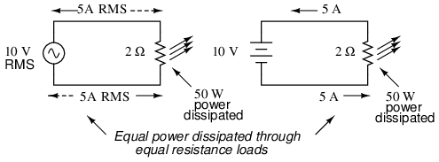
Un voltaje RMS produce el mismo efecto de calentamiento que el mismo voltaje DC
En los dos circuitos anteriores, tenemos la misma cantidad de resistencia de carga (2 Ω) disipando la misma cantidad de potencia en forma de calor (50 vatios), uno alimentado por CA y el otro por CC. Debido a que la fuente de voltaje de CA que se muestra arriba es equivalente (en términos de energía entregada a una carga) a una batería de 10 voltios de CC, la llamaríamos una fuente de CA de “10 voltios”. Más específicamente, indicaríamos que su valor de voltaje es de 10 voltios.RMS. El calificativo “RMS” significaRaíz cuadrática media, el algoritmo utilizado para obtener el valor equivalente de CC a partir de puntos en un gráfico (esencialmente, el procedimiento consiste en elevar al cuadrado todos los puntos positivos y negativos en un gráfico de forma de onda, promediar esos valores al cuadrado y luego tomar la raíz cuadrada de ese promedio para obtener la respuesta final). A veces los términos alternativosequivalente or Equivalente CCse utilizan en lugar de “RMS”, pero la cantidad y el principio son los mismos.
La medición de amplitud RMS es la mejor manera de relacionar cantidades de CA con cantidades de CC, u otras cantidades de CA con diferentes formas de onda, cuando se trata de mediciones de energía eléctrica. Por otras consideraciones, las mediciones de pico o pico a pico pueden ser las mejores. Por ejemplo, al determinar el tamaño adecuado de cable (ampacidad) para conducir energía eléctrica desde una fuente a una carga, la mejor opción es la medición de corriente RMS, porque la principal preocupación con la corriente es el sobrecalentamiento del cable, que es una función de la disipación de energía causada por la corriente a través de la resistencia del cable. Sin embargo, cuando se clasifican aisladores para servicio en aplicaciones de CA de alto voltaje, las mediciones de voltaje pico son las más apropiadas, porque la principal preocupación aquí es el "descarga repentina" del aislador causada por breves picos de voltaje, independientemente del tiempo.
Las mediciones de pico y pico a pico se realizan mejor con un osciloscopio, que puede capturar las crestas de la forma de onda con un alto grado de precisión debido a la rápida acción del tubo de rayos catódicos en respuesta a los cambios de voltaje. Para mediciones RMS, los movimientos del medidor analógico (D'Arsonval, Weston, paleta de hierro, electrodinamómetro) funcionarán siempre que hayan sido calibrados en cifras RMS. Debido a que la inercia mecánica y los efectos de amortiguación del movimiento de un medidor electromecánico hacen que la desviación de la aguja sea naturalmente proporcional a lapromediovalor de la CA, no el valor RMS verdadero, los medidores analógicos deben calibrarse específicamente (o mal calibrarse, dependiendo de cómo se mire) para indicar voltaje o corriente en unidades RMS. La precisión de esta calibración depende de la forma de onda supuesta, generalmente una onda sinusoidal.
Los medidores electrónicos diseñados específicamente para la medición RMS son los mejores para esta tarea. Algunos fabricantes de instrumentos han diseñado métodos ingeniosos para determinar el valor RMS de cualquier forma de onda. Uno de esos fabricantes produce medidores de “verdadero valor eficaz” con un pequeño elemento calefactor resistivo alimentado por un voltaje proporcional al que se está midiendo. El efecto de calentamiento de ese elemento de resistencia se mide térmicamente para dar un valor RMS verdadero sin ningún cálculo matemático, solo las leyes de la física en acción en cumplimiento de la definición de RMS. La precisión de este tipo de medición RMS es independiente de la forma de onda.
Para formas de onda “puras”, existen coeficientes de conversión simples para equiparar mediciones de pico, pico a pico, promedio (práctico, no algebraico) y RMS entre sí: Figuraa continuación
{kind=link}

Factores de conversión para formas de onda comunes.
Además de las medidas RMS, promedio, pico (cresta) y pico a pico de una forma de onda de CA, existen relaciones que expresan la proporcionalidad entre algunas de estas medidas fundamentales. Elfactor de crestade una forma de onda de CA, por ejemplo, es la relación entre su valor pico (cresta) dividido por su valor RMS. Elfactor de formade una forma de onda de CA es la relación entre su valor RMS dividido por su valor promedio. Las formas de onda de forma cuadrada siempre tienen cresta y factores de forma iguales a 1, ya que el pico es el mismo que el RMS y los valores promedio. Las formas de onda sinusoidales tienen un valor RMS de 0,707 (el recíproco de la raíz cuadrada de 2) y un factor de forma de 1,11 (0,707/0,636). Las formas de onda en forma de triángulo y diente de sierra tienen valores RMS de 0,577 (el recíproco de la raíz cuadrada de 3) y factores de forma de 1,15 (0,577/0,5).
Tenga en cuenta que las constantes de conversión que se muestran aquí para las amplitudes máxima, RMS y promedio de ondas sinusoidales, ondas cuadradas y ondas triangulares son válidas sólo parapuroformas de estas formas de onda. Los valores RMS y promedio de las formas de onda distorsionadas no están relacionados por las mismas proporciones: Figuraa continuación
{kind=link}
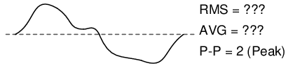
Las formas de onda arbitrarias no tienen conversiones simples.
Este es un concepto muy importante que se debe comprender cuando se utiliza un movimiento de medidor analógico D'Arsonval para medir voltaje o corriente CA. Un movimiento analógico D'Arsonval, calibrado para indicar la amplitud RMS de la onda sinusoidal, sólo será preciso cuando mida ondas sinusoidales puras. Si la forma de onda del voltaje o corriente que se está midiendo no es una onda sinusoidal pura, la indicación proporcionada por el medidor no será el verdadero valor RMS de la forma de onda, porque el grado de desviación de la aguja en el movimiento de un medidor analógico D'Arsonval es proporcional a lapromediovalor de la forma de onda, no el RMS. La calibración del medidor RMS se obtiene “sesgando” el rango del medidor para que muestre un pequeño múltiplo del valor promedio, que será igual al valor RMS para una forma de onda particular yuna forma de onda particular solamente.
Dado que la forma de onda sinusoidal es más común en mediciones eléctricas, es la forma de onda asumida para la calibración de medidores analógicos, y el pequeño múltiplo utilizado en la calibración del medidor es 1,1107 (el factor de forma: 0,707/0,636: la relación de RMS dividida por el promedio para una forma de onda sinusoidal). Cualquier forma de onda que no sea una onda sinusoidal pura tendrá una relación diferente de RMS y valores promedio y, por lo tanto, un medidor calibrado para voltaje o corriente de onda sinusoidal no indicará RMS verdadero al leer una onda no sinusoidal. Tenga en cuenta que esta limitación se aplica sólo a medidores de CA analógicos simples que no emplean tecnología "True-RMS".
- REVISAR:
- The amplitudde una forma de onda de CA es su altura como se muestra en un gráfico a lo largo del tiempo. Una medición de amplitud puede tomar la forma de cantidad pico, pico a pico, promedio o RMS.
- CimaLa amplitud es la altura de una forma de onda de CA medida desde la marca cero hasta el punto positivo más alto o el punto negativo más bajo en un gráfico. También conocido como elcrestaamplitud de una onda.
- Pico a picoLa amplitud es la altura total de una forma de onda de CA medida desde los picos máximos positivos hasta los máximos negativos en un gráfico. A menudo abreviado como "P-P".
- PromedioLa amplitud es la “media” matemática de todos los puntos de una forma de onda durante el período de un ciclo. Técnicamente, la amplitud promedio de cualquier forma de onda con porciones de áreas iguales por encima y por debajo de la línea "cero" en un gráfico es cero. Sin embargo, como medida práctica de amplitud, el valor promedio de una forma de onda a menudo se calcula como la media matemática de todos los puntos.valores absolutos(tomando todos los valores negativos y considerándolos como positivos). Para una onda sinusoidal, el valor medio así calculado es aproximadamente 0,637 de su valor máximo.
- “RMS” significaRaíz cuadrática media, y es una forma de expresar una cantidad de voltaje o corriente CA en términos funcionalmente equivalentes a CC. Por ejemplo, 10 voltios CA RMS es la cantidad de voltaje que produciría la misma cantidad de disipación de calor a través de una resistencia de un valor dado que una fuente de alimentación de 10 voltios CC. También conocido como valor “equivalente” o “equivalente de CC” de un voltaje o corriente de CA. Para una onda sinusoidal, el valor RMS es aproximadamente 0,707 de su valor máximo.
- The factor de crestade una forma de onda de CA es la relación entre su pico (cresta) y su valor RMS.
- The factor de formade una forma de onda de CA es la relación entre su valor RMS y su valor promedio.
- Los movimientos del medidor electromecánico analógico responden proporcionalmente a lapromedioValor de una tensión o corriente CA. Cuando se desea una indicación RMS, la calibración del medidor debe “sesgarse” en consecuencia. Esto significa que la precisión de la indicación RMS de un medidor electromecánico depende de la pureza de la forma de onda: si es exactamente la misma forma de onda que la forma de onda utilizada en la calibración.
Cálculos simples de circuitos de CA
En el transcurso de los próximos capítulos, aprenderá que las mediciones y cálculos de circuitos de CA pueden volverse muy complicados debido a la naturaleza compleja de la corriente alterna en circuitos con inductancia y capacitancia. Sin embargo, con circuitos simples (figuraa continuación) que involucra nada más que una fuente de alimentación de CA y una resistencia, se aplican simple y directamente las mismas leyes y reglas de CC.
{kind=link}
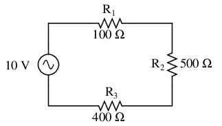
Los cálculos del circuito de CA para circuitos resistivos son los mismos que para CC.
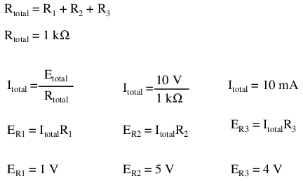
Las resistencias en serie aún se suman, las resistencias en paralelo aún disminuyen y las leyes de Kirchhoff y Ohm siguen siendo válidas. En realidad, como descubriremos más adelante, estas reglas y leyessiempreSi es cierto, es sólo que tenemos que expresar las cantidades de voltaje, corriente y oposición a la corriente en formas matemáticas más avanzadas. Sin embargo, con circuitos puramente resistivos, estas complejidades de la CA no tienen consecuencias prácticas, por lo que podemos tratar los números como si estuviéramos tratando con cantidades simples de CC.
Debido a que todas estas relaciones matemáticas siguen siendo válidas, podemos hacer uso de nuestro conocido método de “tabla” para organizar los valores del circuito tal como con CC:
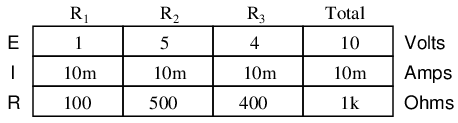
Aquí es necesario hacer una advertencia importante: todas las mediciones de voltaje y corriente CA deben expresarse en los mismos términos (pico, pico a pico, promedio o RMS). Si el voltaje de la fuente se da en voltios CA pico, entonces todas las corrientes y voltajes calculados posteriormente se expresan en términos de unidades pico. Si el voltaje de la fuente se proporciona en voltios CA RMS, entonces todas las corrientes y voltajes calculados también se expresan en unidades CA RMS. Esto es cierto paraanycálculo basado en las leyes de Ohm, las leyes de Kirchhoff, etc. A menos que se indique lo contrario, generalmente se supone que todos los valores de voltaje y corriente en los circuitos de CA son RMS en lugar de pico, promedio o pico a pico. En algunas áreas de la electrónica, se suponen mediciones de pico, pero en la mayoría de las aplicaciones (especialmente en electrónica industrial) la suposición es RMS.
- REVISAR:
- Todas las antiguas reglas y leyes de la corriente continua (leyes de corriente y voltaje de Kirchhoff, ley de Ohm) siguen siendo válidas para la corriente alterna. Sin embargo, con circuitos más complejos, es posible que necesitemos representar las cantidades de CA en una forma más compleja. Más sobre esto más adelante, ¡lo prometo!
- El método de “tabla” para organizar los valores de los circuitos sigue siendo una herramienta de análisis válida para los circuitos de CA.
Fase de CA
Las cosas empiezan a complicarse cuando necesitamos relacionar dos o más voltajes o corrientes CA que no están en sintonía entre sí. Por “desfasado” me refiero a que las dos formas de onda no están sincronizadas: que sus picos y puntos cero no coinciden en los mismos momentos en el tiempo. El gráfico en la figura.a continuaciónilustra un ejemplo de esto.
{kind=link}
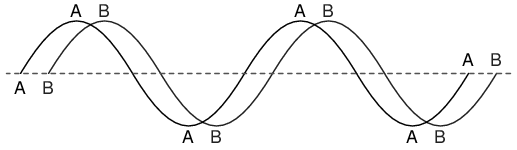
Formas de onda fuera de fase
Las dos ondas que se muestran arriba (A versus B) tienen la misma amplitud y frecuencia, pero no están sincronizadas entre sí. En términos técnicos, esto se llamacambio de fase. Anteriormente vimos cómo podíamos trazar una “onda sinusoidal” calculando la función seno trigonométrica para ángulos que van de 0 a 360 grados, un círculo completo. El punto de partida de una onda sinusoidal era de amplitud cero a cero grados, progresando a una amplitud positiva completa a 90 grados, cero a 180 grados, negativa completa a 270 grados y de regreso al punto inicial de cero a 360 grados. Podemos usar esta escala de ángulo a lo largo del eje horizontal de nuestro gráfico de forma de onda para expresar qué tan desfasada está una onda con respecto a otra: Figuraa continuación
{kind=link}
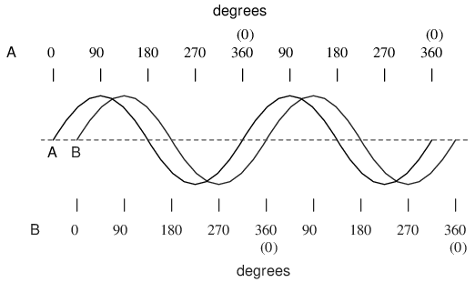
La onda A adelanta a la onda B por 45o
El cambio entre estas dos formas de onda es de aproximadamente 45 grados, estando la onda "A" por delante de la onda "B". En los siguientes gráficos se ofrece una muestra de diferentes cambios de fase para ilustrar mejor este concepto: Figuraa continuación
{kind=link}
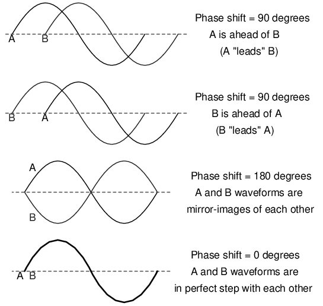
Ejemplos de cambios de fase.
Debido a que las formas de onda en los ejemplos anteriores tienen la misma frecuencia, estarán desfasadas en la misma cantidad angular en cada momento. Por esta razón, podemos expresar el cambio de fase para dos o más formas de onda de la misma frecuencia como una cantidad constante para toda la onda, y no simplemente una expresión de cambio entre dos puntos particulares cualesquiera a lo largo de las ondas. Es decir, es seguro decir algo como "el voltaje 'A' está desfasado 45 grados con el voltaje 'B'". Cualquier forma de onda que esté por delante en su evolución se dice que esprincipaly el de atrás se dice que esrezagado.
El cambio de fase, como el voltaje, es siempre una medida relativa entre dos cosas. Realmente no existe tal cosa como una forma de onda conabsolutomedición de fase porque no existe una referencia universal conocida para la fase. Normalmente, en el análisis de circuitos de CA, la forma de onda de voltaje de la fuente de alimentación se utiliza como referencia para la fase; ese voltaje se indica como "xxx voltios a 0 grados". Cualquier otro voltaje o corriente de CA en ese circuito tendrá su cambio de fase expresado en términos relativos a ese voltaje de fuente.
Esto es lo que hace que los cálculos de circuitos de CA sean más complicados que los de CC. Al aplicar la ley de Ohm y las leyes de Kirchhoff, las cantidades de voltaje y corriente CA deben reflejar el cambio de fase y la amplitud. Las operaciones matemáticas de suma, resta, multiplicación y división deben operar con estas cantidades de desfase y amplitud. Afortunadamente, existe un sistema matemático de cantidades llamadonúmeros complejosideal para esta tarea de representar amplitud y fase.
Debido a que el tema de los números complejos es tan esencial para la comprensión de los circuitos de CA, el próximo capítulo se dedicará únicamente a ese tema.
- REVISAR:
- cambio de faseEs cuando dos o más formas de onda no están sincronizadas entre sí.
- La cantidad de cambio de fase entre dos ondas se puede expresar en términos de grados, según lo definido por las unidades de grado en el eje horizontal del gráfico de forma de onda utilizado para trazar la función seno trigonométrica.
- A principalLa forma de onda se define como una forma de onda que está por delante de otra en su evolución. ArezagadoLa forma de onda es aquella que está detrás de otra. Ejemplo:
-
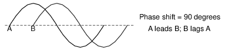
- Los cálculos para el análisis de circuitos de CA deben tener en cuenta tanto la amplitud como el cambio de fase de las formas de onda de voltaje y corriente para que sean completamente precisos. Esto requiere el uso de un sistema matemático llamadonúmeros complejos.
Principios de radiofrecuencia
Una de las aplicaciones más fascinantes de la electricidad es la generación de ondas invisibles de energía llamadasondas de radio. El alcance limitado de esta lección sobre corriente alterna no permite una exploración completa del concepto; se cubrirán algunos de los principios básicos.
Con el descubrimiento accidental del electromagnetismo por parte de Oersted, se comprendió que la electricidad y el magnetismo estaban relacionados entre sí. Cuando una corriente eléctrica pasaba a través de un conductor, se generaba un campo magnético perpendicular al eje del flujo. Del mismo modo, si un conductor estaba expuesto a un cambio en el flujo magnético perpendicular al conductor, se producía un voltaje a lo largo de ese conductor. Hasta ahora, los científicos sabían que la electricidad y el magnetismo siempre parecían afectarse entre sí en ángulos rectos. Sin embargo, justo debajo de este concepto aparentemente simple de perpendicularidad relacionada se ocultaba un descubrimiento importante, y su revelación fue uno de los momentos cruciales de la ciencia moderna.
Es difícil exagerar este avance en la física. El responsable de esta revolución conceptual fue el físico escocés James Clerk Maxwell (1831-1879), quien “unificó” el estudio de la electricidad y el magnetismo en cuatro ecuaciones relativamente ordenadas. En esencia, lo que descubrió fue que los sistemas eléctricos y magnéticoscamposestaban intrínsecamente relacionados entre sí, con o sin la presencia de un camino conductor para que los electrones fluyeran. Dicho más formalmente, el descubrimiento de Maxwell fue el siguiente:
Un campo eléctrico cambiante produce un campo magnético perpendicular., y
Un campo magnético cambiante produce un campo eléctrico perpendicular..
Todo esto puede tener lugar en el espacio abierto, donde los campos eléctricos y magnéticos alternos se apoyan mutuamente mientras viajan por el espacio a la velocidad de la luz. Esta estructura dinámica de campos eléctricos y magnéticos que se propagan a través del espacio se conoce mejor comoonda electromagnética.
Hay muchos tipos de energía radiativa natural compuestas de ondas electromagnéticas. Incluso la luz es de naturaleza electromagnética. También lo son los rayos X y la radiación de rayos “gamma”. La única diferencia entre estos tipos de radiación electromagnética es la frecuencia de su oscilación (alternancia de polaridad de los campos eléctrico y magnético). Al utilizar una fuente de voltaje CA y un dispositivo especial llamadoantena, podemos crear ondas electromagnéticas (de una frecuencia mucho más baja que la de la luz) con facilidad.
Una antena no es más que un dispositivo construido para producir un campo eléctrico o magnético dispersivo. Dos tipos fundamentales de antenas son lasdipoloy elbucle: Cifraa continuación
{kind=link}
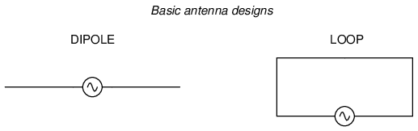
Antenas dipolo y de bucle
Si bien el dipolo parece nada más que un circuito abierto y el bucle un cortocircuito, estos trozos de cable son radiadores eficaces de campos electromagnéticos cuando se conectan a fuentes de CA de la frecuencia adecuada. Los dos hilos abiertos del dipolo actúan como una especie de condensador (dos conductores separados por un dieléctrico), con el campo eléctrico abierto a la dispersión en lugar de concentrarse entre dos placas muy espaciadas. La trayectoria del cable cerrado de la antena de cuadro actúa como un inductor con un gran núcleo de aire, lo que nuevamente brinda una amplia oportunidad para que el campo se disperse lejos de la antena en lugar de concentrarse y contenerse como en un inductor normal.
A medida que el dipolo energizado irradia su campo eléctrico cambiante hacia el espacio, se produce un campo magnético cambiante en ángulos rectos, manteniendo así el campo eléctrico más adentro del espacio, y así sucesivamente a medida que la onda se propaga a la velocidad de la luz. A medida que la antena de cuadro alimentada irradia su campo magnético cambiante hacia el espacio, se produce un campo eléctrico cambiante en ángulo recto, con el mismo resultado final de una onda electromagnética continua enviada desde la antena. Ambas antenas logran la misma tarea básica: la producción controlada de un campo electromagnético.
Cuando se conecta a una fuente de alimentación de CA de alta frecuencia, una antena actúa comotransmitiendoDispositivo que convierte voltaje y corriente CA en energía de ondas electromagnéticas. Las antenas también tienen la capacidad de interceptar ondas electromagnéticas y convertir su energía en voltaje y corriente alterna. En este modo, una antena actúa comorecepcióndispositivo: Figuraa continuación
{kind=link}
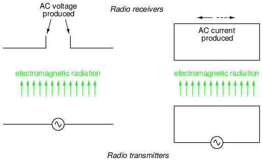
Transmisor y receptor de radio básico.
mientras haymuchoMás que se puede decir sobre la tecnología de antenas, esta breve introducción es suficiente para darle una idea general de lo que está sucediendo (y tal vez suficiente información para provocar algunos experimentos).
- REVISAR:
- James Maxwell descubrió que los campos eléctricos cambiantes producen campos magnéticos perpendiculares y viceversa, incluso en el espacio vacío.
- Un conjunto gemelo de campos eléctricos y magnéticos, que oscilan en ángulo recto entre sí y viajan a la velocidad de la luz, constituye unonda electromagnética.
- An antenaes un dispositivo hecho de alambre, diseñado para irradiar un campo eléctrico cambiante o un campo magnético cambiante cuando se alimenta con una fuente de CA de alta frecuencia, o interceptar un campo electromagnético y convertirlo en un voltaje o corriente de CA.
- The dipoloLa antena consta de dos trozos de cable (que no se tocan), que generan principalmente un campo eléctrico cuando se energizan y, en segundo lugar, producen un campo magnético en el espacio.
- The bucleLa antena consta de un bucle de cable que genera principalmente un campo magnético cuando se energiza y, en segundo lugar, produce un campo eléctrico en el espacio.
Colaboradores
Los contribuyentes a este capítulo se enumeran en orden cronológico de sus contribuciones, desde el más reciente hasta el primero. Consulte el Apéndice 2 (Lista de colaboradores) para fechas e información de contacto.
Harvey Lew(7 de febrero de 2004): Error tipográfico corregido: “circuito” debería haber sido “círculo”.
Duane Damián(25 de febrero de 2003): Señaló un error de polaridad magnética en la ilustración del generador de CC.
Mark D.Zarella(28 de abril de 2002): Sugerencia para mejorar la explicación de la amplitud de la forma de onda "promedio".
John Symonds(28 de marzo de 2002): Sugerencia para mejorar la explicación de la unidad “Hertz”.
Jason Stark(Junio de 2000): Formato de documentos HTML, que dio lugar a una segunda edición mucho más atractiva.
Lecciones en circuitos eléctricoscopyright (C) 2000-2023 Tony R. Kuphaldt, según los términos y condiciones delCC BY License.